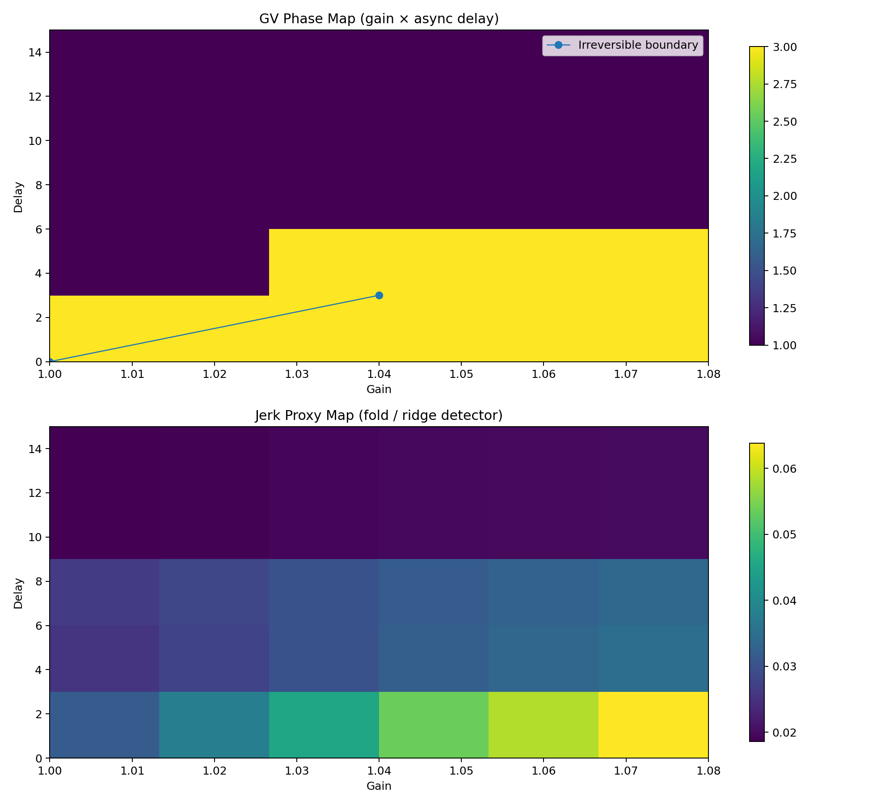

Make strain legible
Study drift, stability, and recoverability signals without presenting them as certainty.
ResearchIndependent safety engineering
We make system strain legible and powerful software governable, while keeping decisions, permissions, and the switch under human authority.
Research stage. Runtime governance is experimental. GVAI Intelligence is in development. No live analysis or operational safety service is offered here.

A guide to our work
Powered by OpenAI
Explore approved facts about our technology, research, documentation and plans.
AI-generated answers may be inaccurate. Check the linked sources. This assistant provides information only and has no operational or shutdown authority.
Read documentation · Contact GVAIWhen enabled, your question and bounded recent conversation are sent to a GVAI backend and OpenAI. Do not share personal, confidential or sensitive information, API keys or credentials. This page’s local conversation is cleared on reset or reload. OpenAI and hosting provider retention policies apply.
Ask GV is unavailable until secure backend hosting is configured.
We research how changing constraints affect recoverability, and how agent actions can be evaluated before they reach authoritative systems. Oversight, permissions, and shutdown authority must remain outside the system being governed.
Read the current threat modelTechnology overview
Study drift, stability, and recoverability signals without presenting them as certainty.
ResearchTest proposed actions against explicit invariants and observed effects.
PrototypeThe governed agent does not own policy, permissions, or the switch that stops it.
Design principleFuture business tools are intended to explore regional workforce evidence, automation exposure, and transition scenarios. Customer access, data controls, and evaluation are still in development.
Business - Request a DemonstrationFuture government tools are intended to support regional exploration and planning. No public-sector analysis service or decision system is offered by this page.
Government - Request a Technical BriefingA future platform for internal engineering and external customers, with separate identities, tenant boundaries, tool permissions, and independent enforcement.
Platform directionA future intelligence layer for internal operators and external customers, designed around distinct identities, tenant boundaries, tool permissions, and independent safety enforcement.
Separate internal identities and permissions for work on the platform itself.
Separate customer identities, tenant-scoped data, and explicitly permitted tools.
Identity and authorization interfaces exist as a foundation only. The GVAI Intelligence platform has no production login, live model connection, tenant service, or customer data processing on this website.
Explore an advisory decision API for your application's telemetry and reported action effects. Get structured recommendations you can inspect and integrate into your own review process.
Inquiries only; access is not activated by this page. Hosted pilot access is subject to operator approval and operational validation. Paid subscriptions are not available. There is no signup, checkout, or live advisory API connection on this website.
Results use caller-supplied telemetry and reported effects, not independent observation of your system. An omitted or inaccurate report can limit the recommendation.
Each newly reserved attempt consumes one unit, including failures or lost replies. Exact request-ID retries do not run the evaluator again; they do not retrieve a previous result. Pilot access ends at its expiry or cap and can be suspended.
Illustrative contract examples, not live results or a public endpoint. Approved clients use POST /v1/evaluations with a bearer API key in the Authorization header and Content-Type: application/json. Replace the example request and project IDs with your own opaque request ID and operator-provided project ID. Never put credentials in URLs or email them.
{
"version": "v1",
"request_id": "req-2026-001",
"resource_id": "project-a",
"telemetry": {
"token_delta": 100,
"tool_calls_delta": 1,
"error_delta": 0,
"repeated_action_delta": 0,
"recursion_depth": 0,
"latency_ms": null
},
"reported_effects": []
}{
"outcome": "evaluated",
"reason": "evaluated",
"evaluation": {
"version": "gvai-evaluation-v1",
"request_id": "req-2026-001",
"decision": "ALLOW",
"risk_score": 1.45,
"risk_band": "green",
"explanation": "The existing telemetry guard classified this sample green. No authority-expansion effect was reported. This is not authorization or enforcement.",
"evaluation_status": "ok",
"advisory_only": true,
"enforcement_applied": false
}
}Advisory is not enforcement. This API does not execute actions, independently enforce shutdown, terminate processes, or establish confinement. It provides no certification, availability, security, or termination guarantee. Independent shutdown research remains experimental and separate from this pilot.
Use the existing contact details and email guidance. Keep your initial inquiry non-sensitive; do not send credentials, prompts, or customer datasets.
Prototype-stage inquiries only. Request a discussion of experimental work or a recorded demonstration. Production services, customer deployments, and operational safety guarantees are not available.
For business and government inquiries, email contact@gvaisafety.com.
These links open your email application; nothing is submitted by this website. If no email application is configured, copy the address above into your preferred email service.
Do not email classified, sensitive, or confidential operational information. Keep initial inquiries non-sensitive. Email is not a secure operational reporting channel.